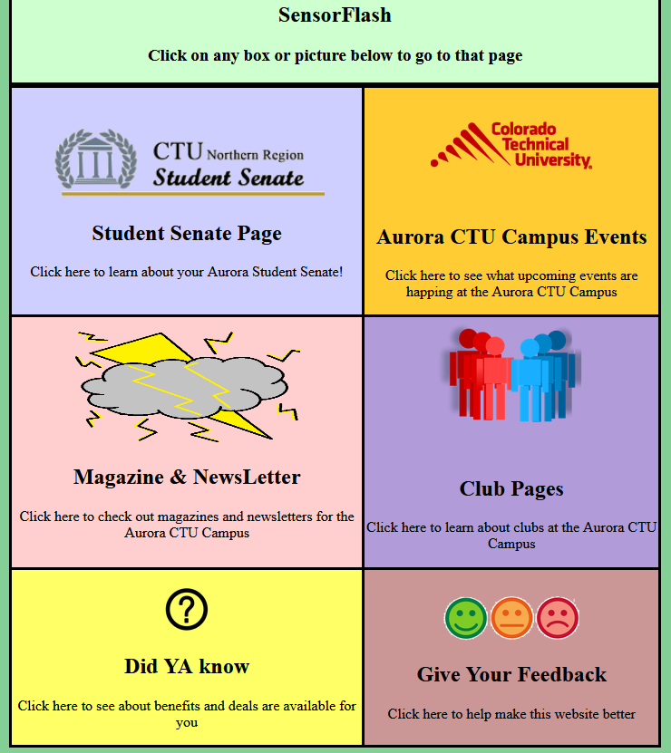

About the Sensor Flash Student Senate Project - 2019
Click for GitHub Repo
Project Details
As (once) the Student Senate Secretary, I saw an opportunity to get the CTU Aurora Campus Senate and the CTU Aurora Campus Clubs a spotlight that many students were not aware even existed.
With the communication of the Senate Staff Adviser and Senate President, we put forth the approval to get a website running called Sensor Flash.
The website was to bring updated events, meetings, and all around Club information and Senate information that all students could access and be informed of.
Completion of this website needed cooperation from all Clubs and their Staff Advisers. The site would be a bridge to connect the Aurora Campus crowd and the Online Campus crowd.
Technologies
HTML, CSS, JavaScript, and PHP
Features
Internet Accessible
Simple navigation
Ability to Leave Feedback
Project Progress
Terminated
At the very start of COVID, the Aurora Senate was halted along with all Campus events. The CTU Aurora Senate and the CTU Colorado Springs Senate decided to dissolve together to create a new entity that overwrote all previous approved items.
Website Screenshots
Screenshot of the Home body:
Click for GitHub Repo